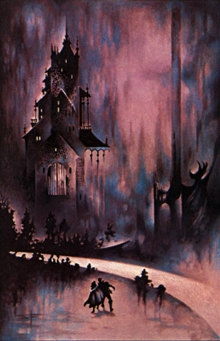

The Guild of the Last Migration
by
Welleran
"Tani! 'Ware the holes!" The whisper from the darkness is harsh, insistent. I look down from the glow in the east to the ground at my feet, noting the deep hole I'd nearly tripped over. If it were a fire hole I'd have noticed it, I rationalize to myself. I do not thank the Foray Leader for his warning. It would only draw another rebuke.
It is my third Foray to the Outside, and still the awe of what I see distracts me from the task at hand. Seeing the Night Land from a high embrasure is nothing to seeing it from within. I cannot help looking around me at its dark wonders. I was never a good one for observing the Seventh Stricture: do thou have a care for thyself at all times Outside, letting not the beguilements of Evil lead thee astray.
Our Foray of seven had departed the Eastern Sortie Port forty hours past. Not for the first time, I wish we had been able to leave through the Great Gateway, as it would have cut many hours off our journey. That is forbidden, of course, as to do so would alert the populace to our mission, and too many rumors of our Guild's existence have been noised through the cities as it was. Secrecy is still deemed critical for our ultimate success.
We continue to the northeast, loosely following the Road of the Silent Ones, now to our left. I still hope to see one of those cloaked figures more closely than I yet have. Foray Leader Ramal would rebuke me for that wish, too.
Our tasking this particular Foray is to collect lesser creatures and plants near to the shores of the Giant's Sea. Each of us carries a satchel of metallic fibers to hold our samples, which are to be brought back alive and whole, if possible. "Rat-catching" we call these missions. Unglamorous, but deadly nonetheless. Our presence outside the Air Clog ensures that.
I force my wavering attention back to my surroundings, not wishing to give Ramal any more reason to berate me when we return to the Redoubt. Being a woman does not help my case. Women are still not allowed to venture into the Night Land, as decreed by ancient law and custom. Some hold it an abomination that our Guild is exempted from this, and thus there are precious few of us. "You must be twice as capable as a man to earn their respect," I'd been told by an elder female Guildmember. Alas, so far I had proven to be less capable than most. But I cannot help it. The Night Land holds an unholy fascination for me beyond that common in the Redoubt.
There is a slight hiss from the darkness ahead of me and I drop instantly to the ground, my hand grasping the Diskos at my side. A dead silence follows, then a distant laughter spreads from the southeast. I've heard that sound many times before, and grow chill every time. After a moment, I grow somewhat less tense. I can sense it is not directed at us. Ramal must agree. I see his black silhouette rise and motion us forward again.
We continue on for a few more hours, halting finally by a pile of boulders. We would rest now for a few hours before continuing. It is my turn for the first watching, so I take a position somewhat apart from my comrades. I see Ramal eye me unkindly, as if he does not trust me to raise the alarm if needed, but he says nothing. I shiver, and take a small Dark Fire Cube and place it on a rock before me. Drawing my Diskos, I bring the butt down hard on the Cube, starting it to burn. Immediately a strong heat erupts from it, but almost no light. It will keep me warm for the hours of my watch, yet not alert monsters to our presence. I place a Bright Fire Cube next to it, in case of danger.
I enjoy having the watch, despite the loss of sleep. It is a rare time when I am actually required to do nothing but observe the Night Land, remaining alert for any danger to our Foray. Further, I don't have to worry about tripping into fire holes or stepping on serpents. And I am alone with my thoughts.
As I often do, I wonder about my father's thoughts as he traveled alone into the Night Land. Why did he go? What drove him to such a rash action? They are useless questions, of course, since the only one who might have told me the answers took her life when she learned her husband had been taken by the House of Silence. In my darkest moods, I wonder what I would find if I followed him into that place of dread. Then there are the dreams. I shake my head. Such thoughts are for inside the Redoubt, not while abroad in the Night Land.
Alone, on watch, my own loneliness creeps over me. I have no friends, only clan members who once tolerated an aberrant girl-orphan. I have no friends even within my own Guild. Our removal to the secret parts of the lower pyramid had been a great trauma to the other new apprentices, but not to me. I had merely traded one isolation for another. I did not mourn losing my clan, nor they me, I am sure. I suppose I am just grateful that the Guild's secretive recruiters found me and gave me a chance I would never have otherwise obtained. I wonder if my clan had even noticed my disappearance.
A great plume of fire erupts far to the south, pulling my attention back to the present. The Giant's Kilns. I hear a dull rumbling from there. Tiny figures I know to be twenty-feet tall and more are at times silhouetted against the glow of their strange forges. Their present activity is a boon to us. It attracts the attention of watchful city-dwellers in the Redoubt and lessens the chance we will be observed. Dressed all in black as we are, and hooded, it is easy to dismiss sightings of our activities as the actions of strange new monsters. Still, secrecy is the First Stricture, and enforced on pain of death.
So much secrecy. We are told in our lessons that such secrecy is vital lest the Evil Powers of the Night Land learn prematurely of our plans for the vast Tunnel of the Migration. Some believe the entire Migration might be accomplished in secret, were we to be both vigilant and lucky. I smile slightly at the thought of monsters pouring into the Great Redoubt when the Earth Current finally fails, after millions of years of waiting, only to find -- nothing. How would they react? I had been reprimanded when I asked that question. The thoughts of the Monsters and Evil Powers are the province of the Monstruwacans, not our Guild, the teacher had told me. It was not my place to think on it. Of course, I was never one to fully obey the Second Stricture of unquestioning obedience to my betters.
The Monstruwacans. There was a Guild I would have joined had I the chance. To watch the Night Land and delve its greater mysteries. There were whispers among the apprentices that some Monstruwacans opposed our Guild's methods and plans. Our expeditions are too invasive, too direct, they say. We will only serve to aggravate the monsters. For my part, I think they feel our knowledge gathering must usurp some of their authority. I wonder if any Monstruwacans envy us our boldness, entering what they only dare watch.
A new thought occurs to me. What purpose would a Monstruwacan serve in the Land of Seas and Volcanoes? Rumor says that no Evil Powers reside there. Would their Guild fall from its, literal, pinnacle of power? Or would they bring the monsters with them to maintain their purpose of existence? I smirk. I am filled with blasphemous thoughts this Foray.
"Tani," whispers a voice, drawing me swiftly back to reality. Donal has come up behind me from the camp. I turn calmly, not showing him how poor was my watchfulness. "Your turn is over. Get some sleep." I look at my dial. I have already been on watch for two hours now. It passed quickly. In the dull light of the distant Kilns I see Donal smile. He is friendlier to me than most. I return his smile and make my way over to the others to get a few hours of sleep. I wonder if I will dream of my father again. The dreams are always so vivid when I am outside of the Redoubt.
The serpent writhes in my gauntleted hand, its sinuous body wrapping around my arm and squeezing painfully. I grip it as tightly as I can, keeping its fanged mouth well clear of me. "The sack! The sack!" I hiss. Donal holds open one of the metallic satchels and I shove the creature inside it. Another apprentice uses a pole to push the thing down from my arm, as Donal cinches shut the bag. The serpent wriggles violently, displeased with its new home.
Catching the serpent has used a good deal of energy, so I pop a food tablet into my mouth and take a draught from my small canteen. It is empty now — I will have to refill it with some of my powder. I sit down to rest a moment.
We have caught three different types of serpent, a small furred creature of some sort, and a scorpion as large as my head since we crossed the Road Where the Silent Ones Walk. These, and numerous plants, make for a good Foray thus far, especially since we have not skirmished with a single monster. It is almost unheard of.
I smile in amusement at the various metallic bags writhing with their captives' attempts at escape. It seems an odd thing to risk life and even soul for, this zoology and botany expedition. But I know our Guild's technicals use everything we bring in. Antivenins for the poisons of some creatures are being developed. Plants are being studied for their nutritious properties. Everything of life in the Night Land is being studied to a degree of detail that has not been undertaken in recorded memory.
It is a grand adventure, this new science, or so the Masters tell us. Someday soon, scouts are even going to brave the journey to the Land of Seas and Volcanoes. They will need to know everything they can to survive. Our work now is to lay the groundwork for all this. After all, we cannot expect the Tunnel of the Migration to open into that deep land without some preparation and scouting having been completed.
So we are repeatedly told, though rumor says that a few lone scouts have already attempted the journey and a few have even returned alive. It is not permitted to speak of such things, though no Stricture prohibits it. And all the populace knows the story of how that land was first discovered. My father had often read it to me as a little girl as I lay in bed, my pet Jewel-beetle Arda watching over us both from its perch. "I will be like Naani," I would tell him, and he would smile. What would he think of me now?
Indeed, there were yet stranger rumors, too, such as the one that said another, more secret Guild was working on a vessel to leave our dying planet and seek a new one, if such a one exists. Or maybe it is a faction of our own Guild doing this. It depends upon the gossiper. I don't particularly believe it either way. There is nothing beyond our world, only cold darkness.
It is true that not all of the Forays collect just plants and small animals. Some of the more experienced ones spy out the ways of the greater monsters and even the Evil Powers themselves. What they learn is not shared with mere apprentices, though I am sorely interested in such matters. Of course, my betters answer my curiosity with rebukes. But I have seen Guildsmen return with terrible wounds from battle, and I know that sometimes whole Forays do not come back. There are places in our portion of the supposedly sealed lower part of the Redoubt that we are not permitted to enter. I fancy captured monsters are kept there, like how serpents and lesser creatures are kept alive elsewhere, for study. But, as like as not, I am not destined to rise far in my Guild and will never be made privy to such matters.
"Tani. Get up!" Ramal retains his harsh tone with me, despite my capture of the serpent. Of course, he is not as weary as I, not deigning to collect or carry samples himself. But I get to my feet and gather around him with the others.
"I want one more creature before we return. We will not rest until we get it." No one complains aloud, though I could see weary annoyance in the eyes of the other apprentices. We are over sixty-five hours out now, not over-long as Forays go. Still, it was a non-Stricture rule that the less time spent in the Night Land, the better. I suspect Ramal is more interested in impressing the Masters than anything else. Of course, being perverse, I do not mind a longer Foray. I like being Outside. Yet another reason I have no friends.
We fan out, shining very dim lights into holes and under rocks and moss bushes to find any easily portable resident of the Night Land. I hate the lights we are issued. They are so dim to avoid giving away our location that they are nearly useless for seeing anything. And you have to hold the button in all the time or they shut off, in case one is dropped.
We are trained to stay in relative proximity to one another, but I find myself drifting apart as I search. I do nothing to correct it. My attention is drawn to the steaming waters of the Giant's Sea, which reflects the unblinking lights of the Quiet City on the far shore. It is a strange and hauntingly beautiful sight, that city where never is seen any hint of life or motion. Only the steady lights, by which I can just make out the Road by the Quiet City and the Black Mist beyond. I wonder if any Foray will ever journey there to unravel those mysteries. I would volunteer to do so in an instant.
A great bellowing erupts suddenly, close by. Some creature is very close! Though we had heard the howls and roaring of beasts at times on this Foray, they were always distant. It is likely not a coincidence one is now so close to us. Many beasts of the Night Land have keen senses.
A second noise now, even closer. I draw the Diskos from my side and turn to where my companions are. The distant fire of a Diskos flares as it begins to spin. I have drifted further from them than I'd realized. With a whimper of fear, I begin running headlong through the darkness to reach them. The beast reaches them first.
I see it clearly now for the first time in the glow of the Diskoi. The huge monster towers over my comrades, a great mass of shaggy hair, muscle, and bone. I have no name for this debased creature. Every year more and more such unique beings wander within the sight of the Redoubt, though what this may portend I do not know.
In an instant, it leaps over one of the apprentices, ripping his head from its shoulders with a clawed leg. His Diskos falls to the earth, useless, as its fire dies. The beast leaps clear of the others, who swing their weapons wildly, without effect. The beast turns and snarls from several of its mouths. I keep running.
It leaps again into the midst of the Foray, its terrible claws shredding them like paper. Their Diskoi burn with fire as they cut and slash at the beast, and they rend it with many wounds. But it is for naught. Within a few heartbeats, they all lie dead. Everyone of them, even Ramal whom I hated, torn apart as he struck at the monster's eye clusters. The beast looks about once, roaring in pain and triumph, then begins tearing at the corpses. It has not seen me.
Realization of my plight is slow in coming, though at least my feet have stopped running toward certain death. I crouch down even as a loud tumult erupts around me. The brief battle has alerted nearby creatures that humans are about and they will be searching for others. I am alone in the Night Land.
Diskos in hand, I look around. I can see movement in the dimness in most every direction now. I must move quickly from this place. In the distance, I can see the dim glow above the North-East Watcher. I will use that as my guide to clear the area and locate the Eastern Sortie Portal. I cannot go directly to the Redoubt, though it is easily visible to me. We are sworn to die before we pass the Air Clog and reveal our Guild's existence to the populace. The First Stricture forbids it most stringently.
I rise to a crouch then lope off to the southwest, keeping as low as I can, and for once I am grateful for my short stature. As yet, I am not seen, and am still hopeful I can clear the area before the monsters have fully mobilized themselves for a search.
After an hour or more, I slow, exhausted and sore from running in this odd fashion. I am now near the Road Where the Silent Ones Walk. When I have rested, I will cross and turn more to the south to seek the hidden Sortie Portal and thereby avoid the Watcher. I eat two food tablets to restore my strength and make a little water with my powder to wash them down.
As my heart steadies, and it seems I am in no immediate danger, my mind comes back to the horrible slaughter I have witnessed. Had the Monstruwacan watchers witnessed it? Would the Masters believe I had tried to help, yet alone had survived of my Foray, uninjured? What if I was accused of cowardice, or worse? I began to shake, and not from the bitter cold. I wonder if the greater danger to me lies outside the Redoubt, or within. I shake my head violently to chase out such doubts. There is no life outside the Redoubt. I run for the Road.
I am maybe a hundred paces from the road when I hear a new sound ahead of me. It starts as a slight skittering and rustling, like the constant fall of millions of tiny pebbles on a soft surface or countless whispers I cannot understand. It is so subtle I do not even realize I am hearing it for some moments. I slow, but do not stop. A dread rises in me, though I do not know its cause. And then, as I reach the crest of a slight hill, I see it spread before me, a dark, crawling mass, like a flood of black waters, but flowing up the rise towards me. It is the Dark Whisperer, a creature not seen near the Redoubt in a century or more, and little understood since its appearance was rare and few have ever survived to tell of it. It is not a single creature, I realize in horror, but many creatures, a flow of small black insects, crawling towards me. I cry aloud recognizing them as Jewel-beetles, every one a perfect replica of my beloved Arda. Their tiny bodies clack with a slight metallic ring on the rocks as they approach, and I can feel a palpable menace emanate from them. It is their little scissor-like mandibles that make the whispering noise.
My instincts and training give way to sheer panic and sorrow, and I turn to run from the sight, northwards, away from the safety of the Redoubt. I do not think to circle around or hide, only flee, like a terrified animal, tears streaming down my face. It is complete nightmare, as if every pet insect in the Redoubt had become possessed by an evil power.
How long I run, I do not know. I soon leave the deadly Whisperer behind, but I hardly notice this in my blind panic. Only slowly does my mind come back to the present. I slow, then stop and look around. I stand on the Road of the Silent Ones. The Redoubt has receded somewhat, and I can barely see the glow of the Watcher I had previously steered by. My limbs shake, and I am bathed in sweat despite the chill. Have I been running for hours? Days?
I am lucky to be alive, maybe. But I am a long way from safety. What if a Silent One were to come. I get off the Road. I need to rest, even sleep. I am so tired. I quickly look about for a temporary camp, settling on the lee of a great boulder. Almost without thought, I strike a Dark Fire Cube and, grasping my Diskos, I curl up and fall to sleep in moments.
"Tani."
"Father?" I awake in a cold sweat, listening intently for many minutes, but I hear nothing. Did I hear the voice, or was it a continuation of my dream? It must be the dream. It had been very intense, much stronger than any I'd yet had. The dreams often come to me, especially when out on Forays. But this seems so real. Am I going mad?
I eat and drink again, sitting in the darkness, staring at nothing. I am reluctant to start again, I realize. It would be easy to lie down and never rise again. So easy, so peaceful. I shudder. Where are these thoughts coming from? I am a survivor, I tell myself. My whole life has taught me little else. I want to fight, but I also want to rest. A strange weight presses on me, and my will seems drained.
I rally myself, defying the oppressiveness of the Night Land to destroy me. I stand and turn to the south, to the Redoubt, and begin walking. The psychic weight on me shatters under my resolve. I smile briefly at my victory. The Night Land will not break me.
A great roaring erupts a short distance ahead of me and my will crumbles. The shaggy beast that killed my companions has scented me. It is coming up the trail I made in my mad escape. My triumph melts, replaced by fear. I turn and run to the north.
Again, a blind rout, as the howls of the hunting beast grow closer. I run past thinking, past exhaustion, until my feet falter in a hot stream and I fall into foul water. The shock revives me somewhat, but I do not pause long enough to fully recover my wits. The howls are so close now. I rise and continue running across the stream. Soon, the monster's bellowing grows frustrated. I smile grimly. The stream must have slowed it down.
I travel for an hour or more as the creature's racket diminishes. But as my fear gives way to simple exhaustion, I feel a new presence, close at hand. I turn. Coming up behind me is a very tall, gaunt figure. It is roughly humanoid in general shape, but its strangely elongated features, impossibly long arms, and spongy grey hide I recognize as that of a Monitor. It looks at me and laughs cruelly. I begin to cry again with a new fear. These creatures, seen at times throughout the Night Land, are rumored to be the heralds or emissaries of certain Evil Powers. It lets out a shout of triumph, and others appear near it, laughing with hideous glee. I have never heard of so many in one location before. Every one of them appears identical, their faces strangely familiar, yet horrible. I feel my sanity reeling from half-realized ideas. I turn from them and run as the whole area erupts with the mocking laughter of the creatures.
Sobbing, I run on, pursued by the Monitors. I look back to see at times, though I do not look at their faces again. They seem in no hurry to catch me, but only to keep me running north. I certainly cannot outrun them. I just want to lie down and die.
"Tani."
The voice again. It is before me now, almost palpable in its intensity. It gives me the will to continue on, as if it holds open a door to safety, though I know I cannot possibly escape. "Father, help me!"
"Tani. Come to me." I run on. The Monitors behind me laugh in triumph. They are getting closer, but I will not let them have me.
"Tani. Be with me." I stumble, but get up and run on, ignoring a pain that is more than physical.
"Tani. Rest with me." I see now above me on a hill a strange house with unwavering lights. Nothing moves there. The House of Silence. I stop running and turn around. The Monitors have also stopped and watch me, now silent. I turn back to the House.
"Tani." The voice is more earnest. Does it welcome, or gloat?
Strange. The utter fear I have always felt when looking at this place is gone, replaced by I know not what. I begin walking up the path to the door.
"Tani."
The taste of salt is on my lips, and I wipe tears from my face. I shake a little, though all the fear and pain has left me now. All my doubt is gone. I reach the threshold.
"Tani."
"Father."
© 2003 by Welleran.
Image copyright by Stephen Fabian.